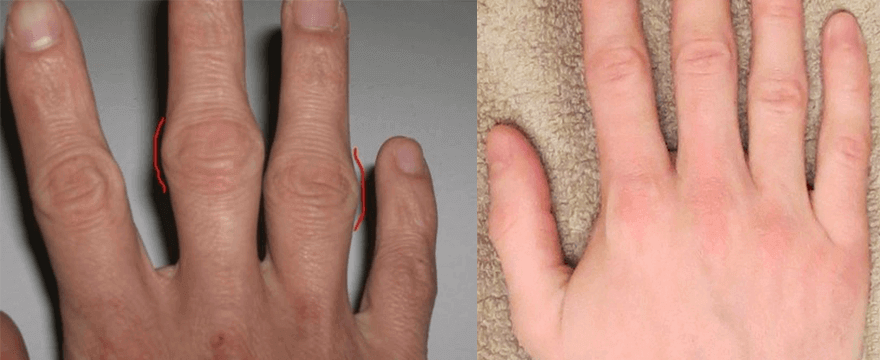

«Российские методы лечения остеохондроза вызывают лишь недоумение». Известный немецкий ревматолог дал откровенное интервью российскому изданию.
- Как вылечить остеохондроз раз и на 10 лет?
- Как избавиться от «Вдовьего горбика»?
- Как вывести соли из суставов и зажить полноценной жизнью?
- Почему в России 9 из 10 врачей не имеют понятия как правильно лечить позвоночник и суставы?
На эти вопросы нам ответит немецкий профессор ревматологии Карл Киршмайер.
Доктор Карл Киршмайер (Karl Kirschmayer) — заведующий Берлинским центром ревматологии Tumorzentrum Eva Mayr-Stihl при всемирно известной Клинике Шарите:
Есть только одна причина остеохондроза, но именно её игнорируют 9 из 10 российских врачей.


Доктор Карл Киршмайер: "В России остеохондроз до сих пор лечат устаревшими и малоэффективными препаратами, которые требуют постоянного применения на протяжении всей жизни. В то время как в Европе остеохондроз лечится так же просто, как насморк - раз и на 10 лет."
В прошлом году Карл Киршмайер приезжал в Россию для изучения опыта своих российских коллег. То, что он увидел в России, по его словам, не поддается объяснению. В нашей стране, по утверждениям Карла, ревматология застряла в середине прошлого века.
После громких выступлений в Германии доктор Карл Киршмайер согласился дать интервью российскому изданию. Что известному врачу не понравилось в российской медицине? И почему он утверждает, что РОССИЙСКИЕ ГРАЖДАНЕ с остеохондрозом никогда не смогут стать здоровыми?
- Выступая перед немецкими журналистами, вы сказали, что увиденное в России повергло вас в шок. Не могли бы вы прокомментировать это?
- Хочу сразу сказать, что я хорошо отношусь к России, к российской культуре и к российским гражданам. Но то, в каком состоянии у вас находится медицина, действительно вызывает шок у европейских врачей. У вас медицина отстает как минимум на 20, а может и на все 30 лет. Во всяком случае, в лечении заболеваний позвоночника и суставов. Можно сказать что такой науки как Ревматология в России не существует.
Смотрите, чем врачи предлагают лечить остеохондроз и суставы в России: Випросал, Долгит, Вольтарен\Фастум гели, Диклофенак, Терафлекс, Нурофен и другими подобными препаратами.
Однако эти препараты НЕ ЛЕЧАТ позвоночник, они лишь снимают симптомы заболевания - боль, воспаление, отёчность. Теперь представьте, что происходит на уровне организма. Когда человек принимает таблетку, наносит анестетический гель или делает инъекцию, боль проходит. Но как только средство перестает действовать - боль моментально возвращается.
А боль это важный сигнал, она сигнализирует, что в позвоночнике идёт паталогический процесс. Просто заглушая боль, поражённый отдел подвергается ещё большему разрушительному воздействию. Процесс разрушения ускоряется в 3-5 раз и в конечном счёте приводит к необратимым изменениям, к полному обездвиживанию и инвалидности.
Такой способ борьбы с болью в спине и суставах в Европе не применяется уже больше 20 лет. Средства от боли используются только в крайних случаях, очень точечно и аккуратно. В Германии они продаются только по рецептам и под строгим контролем.
Так называемые «хондропротекторы» запрещены полностью, как абсолютно мошеннические и бесполезные препараты.
Ваши врачи и фармацевты просто калечат людей! Понятно, что постоянно продавать по высоким ценам средства для устранения симптомов намного выгоднее, чем раз и навсегда вылечить заболевание, восстановить разрушающийся позвоночник, но так же нельзя!
- А как в Германии обстоят дела с лечением остеохондроза?
- Все немецкие врачи, от профессоров-ревматологов до рядовых терапевтов и фельдшеров, уже давно поняли, что нужно устранять не последствия заболевания, а его причины. Это залог полного, быстрого и безопасного излечения. А какова основная причина остеохондроза? Это отложение ортосолей на межпозвоночных дисках!
Ураты – истинные соли мочевой кислоты, причина развития подагры, например.
Остеофиты – кальцинированные соли, являются главной причиной остеохондроза. Кроме того они провоцируют почти 97% остальных заболеваний суставов. Все виды артрита и артроза, остеохондроз, остеопороз, ревматизм, бурсит и даже гигрома. Все эти заболевания имеют одну причину – отложения остеофитов.
Соли, откладываясь на поверхностях позвоночника или сустава, словно наждачная бумага точат окружающие ткани - кости, хрящи, нервы, сухожилия, спинной мозг. Разрастаясь, кристаллы ортосолей начинают травмировать мышечную ткань, сосуды и капилляры. Вызывая этим воспаления, заражения, отёки и тяжёлые боли. В случае с остеохондрозом это особенно опасно! Воспаление в любом отделе позвоночника часто приводит к заражению костного мозга и развитию лейкимии.
В запущенных случаях, крупные скопления ортосолей запросто могут отколоть часть кости, при резком движении, вызвав тем самым полную недееспособность и навсегда обездвижив человека.
Очень опасное заблуждение, что кальций полезен для здоровья позвоночника и суставов. Да, кальций полезен, но полезен он только для ЗДОРОВЫХ суставов и спины. Когда суставы уже болят или хрустят, болит спина или шея, значит в них уже образовался слой остеофитов, а кальций, помимо укрепления костной ткани, также укрепляет и соли-остеофиты, усугубляя и ускоряя их разрастание.
По-этому немецкие ревматологи в первую очередь размягчают соли и восстанавливают кровообращение, чтобы ураты и остеофиты, накопленные годами, выводились из него. Это, в свою очередь, восстанавливает нормальную циркуляцию синовиальной жидкости и запускает процесс восстановления костных тканей.
«Наросты» ортосолей лучше всего можно наблюдать в шейном отделе позвоночника по так называемому «Вдовьему горбу».
На самом деле позвоночник и суставы человека очень регенеративны, они самостоятельно умеют восстанавливаться, словно хвост ящерицы. Нужно только немного помочь им в этом - освободить от "налипших" на них ортосолей и процесс пойдёт самостоятельно.
Еще в 90-х годах прошлого столетия Швейцарским ученым удалось получить особую форму квази-витамина B, так называемый альфа-артроферол. Он получается путём синтеза натуральных ингридиентов: Змеиного яда, пант, акульего жира плюс набор из более чем 50-ти различных экстрактов.
Это вещество способно проникать внутрь молекул ортосолей и разрывать их изнутри – в результате очищаются поверхности позвоночных дисков, восстанавливается кровоток и циркуляция спинно-мозговой жидкости. НАВСЕГДА! А точнее до того момента, пока соли не накопятся снова (но для этого потребуется несколько десятков лет). Больше НЕ НАДО ПОСТОЯННО использовать препараты для избавления от боли и воспаления. Не надо опасаться, что однажды спину "заклинит" навсегда, полностью лишившись подвижности и потребуется операция. Люди становятся полностью здоровыми на десятки лет.
Я когда увидел российскую медицинскую статистику, у меня волосы встали дыбом. Вы знаете, какая в России самая частая причина инвалидности? Это ни рак, ни СПИД, ни диабет, а остеохондроз! Простейший остеохондроз, который в Германии лечится за 2-3 недели не самым дорогим препаратом, в России приводит к инвалидности! А зачастую, даже к летальному исходу из-за общего заражения и повреждения спинного мозга.
В Германии сегодня заболевания позвоночника и суставов не считаются опасным паталогиями, если, конечно, речь не идёт о сильных травматических повреждениях: переломах, дроблении, разрывах и т.п. Боль и воспаления в позвоночнике и суставах говорят лишь о том, что они "загрязнены" солями и их пора чистить. После курса 2-3 недельной "чистки", всё приходит в норму и о проблемах можно забыть на ближайшее десятилетие.
Заболевания позвоночника и суставов, которые в России пытаются "лечить" по отдельности, в Европе уже давно объединены в одно заболевание «Artoninio de sales» (Солевые образования суставов). Это заболевание включает в себя:
- Остеохондроз;
- Подагру;
- Артрит;
- Артроз;
- Ревматизм;
- Остеопороз;
- Бурсит;
- Синовит;
- Гигрому;
Это очень краткий список, но остальные заболевания являются лишь подвидом этих основных девяти паталогий. Например, коксартроз это подвид артроза, Вдовий горб - стадия остеохондроза и т.п.
И весь этот длинный список болячек исцеляется очень просто, банальной чисткой от ортосолей. Абсолютно безопасной, которая не требует даже врачебной помощи и проводится в домашних условиях.
- Как "чистятся" от остеохондроза в Германии?
- Сегодня имеются специальные препараты, которые предназначены для очистки позвоночника и суставов от соляных отложений. Они содержат альфа-артроферол. Лидером среди них является гель «Hondronex - Fortuflex». В нем содержится альфа-артроферол в особой, легко усвояемой форме, за счет чего препарат обладает повышенной эффективностью. «Fortuflex» единственный лицензированный по стандарту GSP препарат, подтверждающий его безопасность для домашнего применения при терапии остеохондроза.
Также важным преимуществом именно «Fortuflex» является то, что он содержит комплекс системных артро-витаминов, макро и микроэлементов, предназначенных для улучшения работы тканей позвоночника. То есть он оказывает всестороннее оздоровляющее действие на костную и хрящевую ткани, синовиальную жидкость, мышечные волокна, на ткани связок, сосудов и сухожилий. Очень богатый спектр коплексного воздействия.
В состав «Fortuflex» входит более 50 компонентов. Не буду перечислять их все, перечислю лишь основные:
|
Арто-Витамин В3 |
Укрепляет и тонизирует хрящевую ткань, повышает её эластичность, увеличивает сопротивляемость к истиранию |
|
Витамин А |
Нормализует проницаемость мелких капилляров |
|
Змеиный яд (микро-молекулы) |
Снимает воспаление и заражение тканей, останавливает процессы гниения |
|
Альфа-артроферол |
Уничтожает отложения ортосолей, размягчает их и разлагает на выводимые элементы |
|
Витамин В3 |
Расширяет сосуды, улучшает приток крови в пораженной области |
|
Клетки Пант Марала |
Ускоряют регенерационные процессы в тканях позвоночника |
|
Акулий жир (альфа-элементы) |
Нормализует циркуляцию синовиальной жидкости |
- «Fortuflex», на сколько нам известно, не продается в российских аптеках?
- В том то и дело, что нет. Российские врачи предпочитают «скармливать» населению анестетики и хондропротекторы тоннами, нежели заниматься настоящим лечением.
При этом вне всякого сомнения, российские ревматологи, по крайней мере те из них, которые интересуются прогрессивными методами лечения, знают о «Fortuflexе» и его восстановительных способностях при остеохондрозе. Но не рискуют назначать препарат, не входящий в список Минздрава.
Насколько я знаю, производитель «Fortuflex» хотел выйти на российский рынок. Но ему не дали это сделать, придумав сотни преград (бюрократия в России неискоренима). Оно и понятно – если этот препарат появится в аптеках, то российская аптечная мафия понесет колоссальные убытки. Ведь фармакология сегодня это бизнес! Даже в Европе. Но в Европе бизнес подконтролен государству, а что происходит в России я не берусь судить, вам виднее.
- Что бы вы посоветовали людям с подагрой, живущим в России?
- Простые люди, особенно люди после 50-ти, страдают от отсталости российской медицины больше всего. Это не их вина, просто так устроена система здравоохранения.
Но к счастью – выход есть. Мы договорились с Российским НМИЦ Ревматологии о возможности скидок на препарат всем гражданам России, имеющим проблемы с позвоночником и суставами. Сотрудники НМИЦ создали специальный центр распределения, а мы предоставили необходимую партию препарата. Поэтому сейчас любой житель России может выписать «Fortuflex» со скидкой до 50%.
«Fortuflex» мы разыгрываем уже 3 месяца. Данной возможностью уже воспользовались несколько тысяч российских граждан. Всех, кто получил «Fortuflex», мы просим оценить - насколько хорошо им помог препарат по шкале от 1 до 10. На данный момент в опросе приняли участие более 3000 человек и средняя оценка препарата 9.97 из 10.
Как видите, «Fortuflex» помог обрести подвижность и избавиться от остеохондроза, «Вдовьего горба» и болей в суставах уже тысячам российских граждан и Вы можете успеть оказаться в их числе.
- Как сейчас люди могут получить скидку на «Fortuflex»? Нужны какие-то справки или паспорт?
- Все, что требуется - проживать на территории нашего региона и быть старше 30 лет. «Fortuflex» отправляется напрямую со склада и доставляется почтой или курьером. Перевозить его в регион и устраивать выдачу по какому-то адресу, с длинными очередями и ожиданием, мы сочли непродуктивной идеей. Люди с остеохондрозом и так страдают каждый день, а мы еще будем заставлять их отстаивать очередь и испытывать стресс. А так все просто - заполнили форму, оставив заявку с именем и телефоном, дождались звонка, назвали адрес и удобное время для доставки. Потом сходили на почту и забрали «Fortuflex».
ВНИМАНИЕ: В рамках акции от дистрибьютора, «Fortuflex» можно получить со скидкой 50%. Для этого нужно открыть коробку и получить скидку, заполнить форму заказа, размещенную ниже, до (включительно). Количество акционных товаров ограничено.


Попробуйте ещё раз!
Поторопитесь! У Вас осталось времени:
10 : 00
Используется шифрование для гарантированной защиты ваших данных.

Поразительно, получили упаковку Fortuflex со скидкой. Мы давно пользуемся дома Fortuflexом, но покупали его сильно дороже.

Я обязательно попробую Fortuflex, потому что как дачный сезон - сразу руки болят, пальцы не согнуть.

Я просто покажу мои руки до
Fortuflex и после. Судите сами


Заказал Fortuflex, отвезу своим в деревню, старики давно с ногами мучаются.

Хорошо что успела заказать по этой цене! Скинула ссылку подруге, а оно уже подорожало…

Вчера забрала на почте 2 курса Fortuflex, маме и себе. Гель прозрачный, одежду не пачкает, вот на фото он.


Мне Fortuflex очень помог! Колено
опухло, не могла ногу согнуть. Отец откуда-то привез Fortuflex
и слава Богу! Смотрите разницу: 

Поделитесь пожалуйста, кто пользовался? Есть результат?

Брала для лечения коленей, первое время ничего не заметно, но на второй день спало воспаление и отек. Боль еще есть, но я продолжаю пользоваться, думаю такими темпами скоро приду в норму.


У меня немного не стандартная ситуация. По молодости сунул руку в циркулярку, лишился фаланг на пальцах... Сейчас, особенно в плохую погоду сильно ноет, врачи говорили, что это фантомные боли, они не лечатся, только обезболивающие пить. Начитался, что определенные растения помогают, действительно помогали но ненадолго, в итоге наткнулся на описание Fortuflex, заказал, попробовал, чудеса, после недели применения боли ушли, но буду мазать еще, как написано в инструкции.

Моя мама буквально спаслась благодаря Fortuflex! как тут и написано, после воспаления болезнь развивалась стремительно, и прошлой зимой мама буквально перестала ходить! Fortuflex тогда очень помог. Сейчас пока скидка закажу еще 2 упаковки, пусть лучше будет под рукой, Препарат дорогой, но он того стоит!

Будьте внимательны! Я заказала на другом сайте и посылка просто не пришла! Хорошо, что деньги вперед не взяли. Очень обидно было ждать напрасно.

Вовремя я эту статью увидел. Колени ноют вторую неделю, очень боюсь развития болезни

Заказала, пришло почтой, шло довольно долго, но это же наша почта! Интересно теперь попробовать!
Ура! Вошел в число счастливчиков, успел заказать Fortuflex со скидкой ! Удивительно просто!